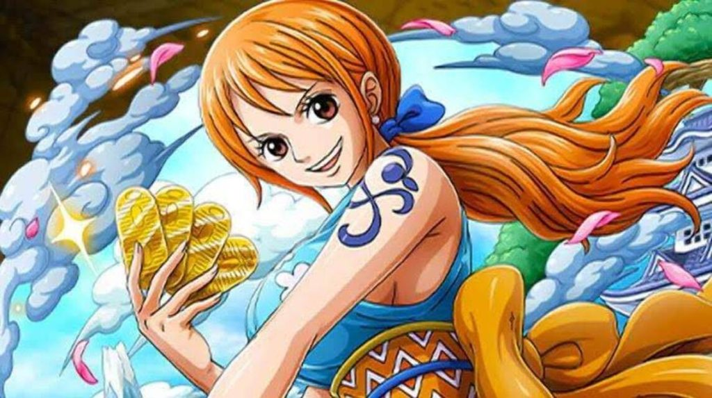

- 나미
- 로빈
- 행콕

나미
원피스의 메인 히로인.[42] 밀짚모자 일당의 항해사. 몽키 D. 루피의 두 번째 동료
어떠한 파도도 헤쳐나갈 수 있는 재색겸비의 항해사다. 이론이 아니라 몸으로 날씨의 변화를 정확히 예측한다. 멍청한 짓만
해대는 루피를 대신해 밀짚모자 일당을 총괄하는 그림자 선장 같은 존재이기도 하다. 원래 아론 일당에게 점령당한 고향
코코야시 마을을 매수하기 위해 1억 베리를 목표로 해적을 상대로 보물을 훔치는 해적 전문 도둑이었다. 해적으로 전직한
지금도 화려한 손놀림을 자랑한다.
특기는 항해와 도둑질[44], 좋아하는 것은 귤과 돈. 목표는 자신의 항해술로 직접 보고
만든 자신만의 세계 지도를 그려내는 것이다. 하루의 항해가 끝나면 그날 저녁 식사를 마친 뒤 해도를 그리는 것이 일과다